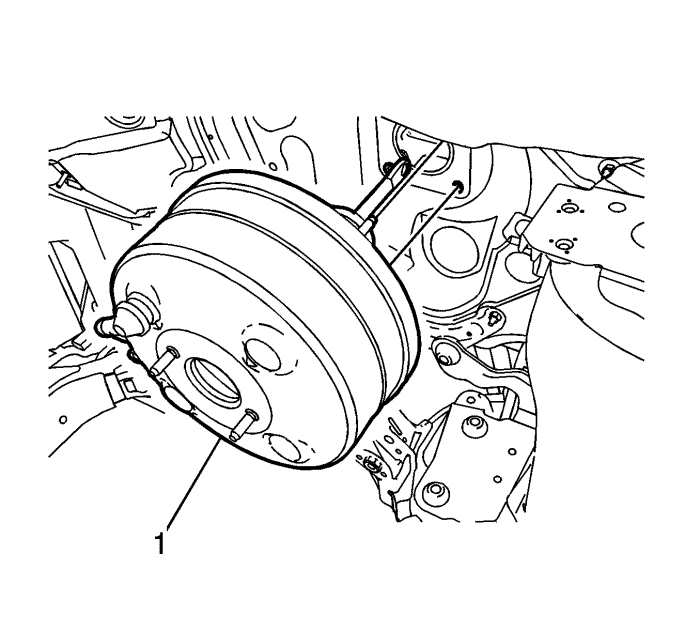

Sustitución del servofreno de vacío eléctrico — LHD (volante a la izquierda)
Procedimiento de desmontaje
Advertencia: Consulte Advertencia de líquido de frenos irritante en la sección Prólogo.
Precaución: Consulte Advertencia sobre los efectos del líquido de frenos sobre la pintura y los componentes eléctricos en la sección Prólogo.
- Desmonte el centro eléctrico bajo el capó. Consultar Sustitución del bloque de unión o del centro eléctrico de la parte inferior del capó .
- Desmonte y sitúe a un lado la cámara de compensación. Consultar Sustitución del vaso de expansión del radiador : Diesel → Motores de gasolina .
- Desconecte la válvula de retención de vacío y el tubo flexible de depresión del servofreno de vacío y colóquelos a un lado. Consultar Sustitución de la válvula antirretorno y del latiguillo del servofreno de vacío : RHD (volante a la derecha) 2.0 l, 2.2 l diésel → LHD (volante a la izquierda) 2.0 l, 2.2 l diésel → RHD (volante a la derecha) 3.0 l → RHD (volante a la derecha) 2.4 l → LHD (volante a la izquierda) 3.0 l → LHD (volante a la izquierda) 2.4 l .
- Desmonte el cilindro maestro. Consultar Sustitución del cilindro maestro : RHD (volante a la derecha) → LHD (volante a la izquierda) .
- Desmonte la válvula moduladora de presión del freno (BPMV). Consultar Sustitución de la válvula moduladora de presión de los frenos .

- Desmonte el protector de rodillas del conductor. Consultar Sustitución del protector de rodillas del conductor : Carrocería larga → Carrocería corta .
- Desmonte el soporte (1) del empujador del servofreno de vacío.
- Desacople el empujador del servofreno de vacío del pedal de freno.
- Desmonte las tuercas (1) del servofreno de vacío.

- Tire con cuidado hacia delante del servofreno de vacío hasta que los pernos de fijación rebasen el salpicadero.
Nota: Compruebe que junto al servofreno de vacío también se retira el aislamiento de espuma de la superficie de apoyo del servofreno.
- Desmonte el servofreno de vacío (1).
- Revise la junta (1) del servofreno de vacío para comprobar si está dañada y, si fuera necesario, sustitúyala.
Procedimiento de montaje
- Monte la junta del servofreno de vacío (1).
Nota: Compruebe que junto al servofreno de vacío también se coloca correctamente el aislamiento de espuma de la superficie de apoyo del servofreno.
- Al mismo tiempo que guía el empujador del servofreno de vacío y los pernos de fijación a través del salpicadero, monte el servofreno de vacío (1).
Precaución: Consulte Precaución con las fijaciones en la sección Prólogo.
- Monte las tuercas (1) del servofreno de vacío y apriételas a un par de 22 N·m (16 lb. pie).
- Acople el empujador del servofreno de vacío al pedal de freno.
- Monte el soporte (1) del empujador del servofreno de vacío.
- Compruebe que el soporte del empujador del servofreno de vacío está correctamente montado girando el soporte 360 grados.
- Monte el protector para las rodillas del conductor. Consultar Sustitución del protector de rodillas del conductor : Carrocería larga → Carrocería corta .
- Monte la BPMV; consulte Sustitución de la válvula moduladora de presión de los frenos .
- Monte el cilindro maestro. Consultar Sustitución del cilindro maestro : RHD (volante a la derecha) → LHD (volante a la izquierda) .
- Conecte la válvula de retención de vacío y el tubo flexible de depresión al servofreno de vacío. Consultar Sustitución de la válvula antirretorno y del latiguillo del servofreno de vacío : RHD (volante a la derecha) 2.0 l, 2.2 l diésel → LHD (volante a la izquierda) 2.0 l, 2.2 l diésel → RHD (volante a la derecha) 3.0 l → RHD (volante a la derecha) 2.4 l → LHD (volante a la izquierda) 3.0 l → LHD (volante a la izquierda) 2.4 l .
- Monte el depósito de expansión. Consultar Sustitución del vaso de expansión del radiador : Diesel → Motores de gasolina .
- Monte el centro eléctrico de la parte inferior del capó Consultar Sustitución del bloque de unión o del centro eléctrico de la parte inferior del capó .
| © Copyright Chevrolet Europe. All rights reserved |